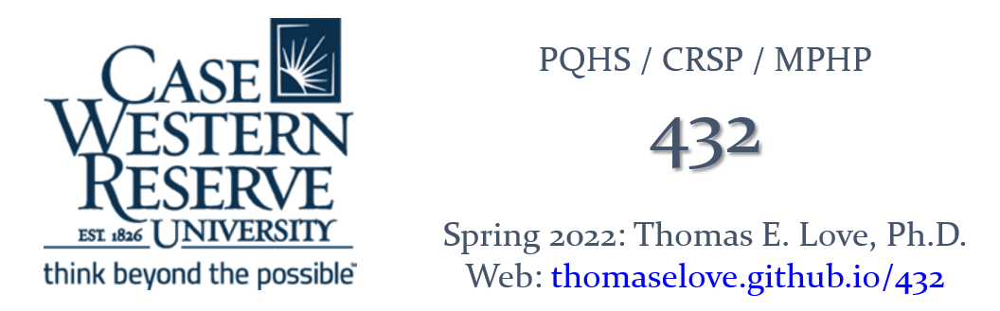

432 Syllabus for Spring 2022
Version 2022-01-12 12:02:26
Welcome!
This is the Spring 2022 syllabus for PQHS / CRSP / MPHP 432: Data Science for Biological, Medical and Health Research II, taught by Professor Thomas E. Love.
Working With This Document
- This document includes multiple sections. Use the table of contents on the left side of the screen to navigate.
- At the top of the document, click the icons to:
- toggle the table of contents sidebar,
- search the document,
- change the size, font or color scheme of the page, and
- download a PDF or Kindle (EPUB) version of the entire document.
- The document will be updated occasionally. The version indicates the most recent update time.
Who, When and Where?
- The course instructor is Professor Thomas E. Love.
- Email him at Thomas dot Love at case dot edu if you have any questions before class.
- There are eight teaching assistants helping with the course this semester. This allows us to provide lots of opportunities for you to get help with the course.
- The Course Calendar provides details on all sessions and deadlines.
- The course is given on Tuesdays and Thursdays from 1:00 to 2:15 PM Eastern Time, via Zoom, starting on 2022-01-11.
Course Home Page
The course home page, with links to everything you’ll need, is at https://thomaselove.github.io/432/. There, you will find:
- The 432 Syllabus (this document)
- Dr. Love’s Course Notes, which serve as the main textbook for the course
- The Course Calendar, which links to materials for each class session and serves as the final word on all deadlines for assignments.
- Details on all assignments, including minute papers, labs, quizzes and projects.
- Data (and Code) for the course’s assignments, presentations, and notes, as well as instructions for installing software.
- Our Piazza discussion forum for questions and answers.
- Our Canvas page for turning in assignments and accessing Zoom sessions and recordings.
